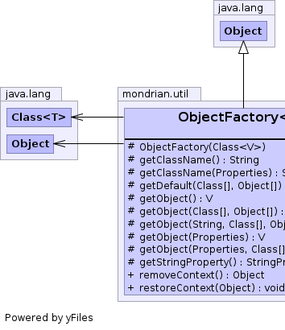
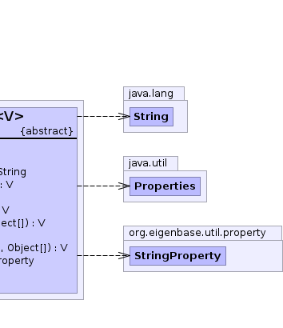

public abstract class ObjectFactory<V> extends Object
ObjectFactory class
are used to produce an implementation of an interface (a
normal interface implementation or a Proxy). In general, a
factory should produce a default implementation for general application
use as well as particular implementations used during testing.
During testing of application code and during normal execution,
the application code uses one of the ObjectFactory's
methods for producing implementation instances - the same method is
used both for test and non-test modes. There are two ways of
modifying the implementation returned to the application code.
The first is for the application to use Properties.
The ObjectFactory implementation looks for a given
property (by default the name of the property is the class name
of the interfaceClass object) and if found uses it as the classname
to create.
A second approach is to use a ThreadLocal; if the ThreadLocal is non-empty then use it as the class name.
When to use a Factory?
Everyone has an opinion. For me, there are two criteria: enabling unit testing and providing end-user/developer-customizer overriding.
If a method has side-effects, either its result depends upon a side-effect or calling it causes a side-effect, then the Object hosting the method is a candidate for having a factory. Why? Well, consider the case where a method returns the value of a System property and the System property is determined only once and set to a static final variable:
class OneValue {
private static final boolean propValue;
static {
propValue = Boolean.getBoolean("com.app.info.value");
}
.....
public boolean hasInfo() {
return propValue;
}
}
In this case, only one value is ever returned. If you have a
module, a client of the above code, that uses the value returned
by a call to the
hasInfo() method, how do you write a unit test of
your module that tests both possible return values?
You can not, its value is based upon a side-effect, an external
value that can not be controlled by the unit test.
If the OneValue class was an interface and there was a
factory, then the unit test could arrange that its own version of the
OneValue
interface was returned and in one test arrange that true
was returned and in a second test, arrange that false
was returned.
The above is a trivial example of code that disallows clients of the code from being properly tested.
Another example might be a module that directly initializes a JMS queue and receives JMS message from the JMS queue. This code can not be tested without having a live JMS queue. On the other hand, if one defines an interface allowing one to wrap access to the JMS queue and accesses the implementation via a factory, then unit tests can be create that use a mock JMS queue.
With regards to providing end-user/developer-customizer overriding, its generally good to have a flexible application framework. Experimental or just different implementations can be developed and tested without having to touch a lot of the application code itself.
There is, of course, a trade-off between the use of a factory and the size or simplicity of the object being created.
What are the requirements for a template ObjectFactory?
First, every implementation must support the writing of unit tests.
What this means it that test cases can override what the factory
produces. The test cases can all use the same produced Object or
each can request an Object targeted to its particular test. All this
without changing the default behavior of the factory.
Next, it should be possible to create a factory from the template that
is intended to deliver the same Object each time it is called, a
different, new Object each time it is called, or, based on the
calling environment (parameters, properties, ThreadLocal,
etc.) one of a set of Objects. These are possible default
behaviors, but, again, they can be overridden for test purposes.
While a factory has a default behavior in an
application, it must be possible for every factory's behavior
in that application to be globally overridden. What that means is
if the application designer has dictated a default, the
application user should be able to change the default. An example of
this is overriding what Object is returned based upon a
System property value.
Lastly, every factory is a singleton - if an interface with an implementation whose creation is mediated by a factory, then there is a single factory that does that creating. This does not mean that such a factory always return the same value, rather that there is only one instance of the factory itself.
The following is an example class that generates a factory
singleton. In this case, the factory extends the
ObjectFactory
rather than the ObjectFactory.Singleton:
public final class FooFactory extends ObjectFactory {
// The single instance of the factory
private static final FooFactory factory;
static {
factory = new FooFactory();
}
public static FooFactory instance() {
return factory;
}
..........
private FooFactory() {
super(Foo.class);
}
..........
}
There are multiple ways of creating derived classes that have support
for unit testing. A very simple way is to use ThreadLocals.
private static final ThreadLocal ClassName = new ThreadLocal();
private static String getThreadLocalClassName() {
return (String) ClassName.get();
}
public static void setThreadLocalClassName(String className) {
ClassName.set(className);
}
public static void clearThreadLocalClassName() {
ClassName.set(null);
}
..........
protected String getClassName() {
return getThreadLocalClassName();
}
Here, the unit test will call the setThreadLocalClassName
method setting it with the class name of a specialized implementation of
the template interface. In the finally clause of the
unit test, it is very important that there be a call to the
clearThreadLocalClassName method so that other
tests, etc. do not get an instance of the test-specific specialized
implementation.
The following is an example unit test that uses the factory's
ThreadLocal to override the implementation that is returned.
interface Boo {
boolean getValue();
.......
}
class NormalBooImpl implements Boo {
public boolean getValue() { ... }
.......
}
class MyCode {
private Boo boo;
MyCode() {
boo = BooFactory.instance().getObject();
}
.......
int getValue() {
if (boo.getValue()) {
return 1;
} else {
return 0;
}
}
}
class MyCodeTest {
private static boolean testValue;
static class BooTest1 implements Boo {
public boolean getValue() {
return MyTest.testValue;
}
.....
}
static class BooTest2 implements
java.lang.reflect.InvocationHandler {
private final Boo boo;
public BooTest2() {
// remove test class name
BooFactory.clearThreadLocalClassName();
// get default Boo implementation
this.boo = BooFactory.instance().getObject();
}
public Object invoke(Object proxy, Method method, Object[] args)
throws Throwable {
if (method.getName().equals("getValue")) [
return new Boolean(MyTest.testValue);
} else {
return method.invoke(this.boo, args);
}
}
}
public void test1() {
try {
// Factory will creates test class
BooFactory.setThreadLocalClassName("MyTest.BooTest1");
MyTest.testValue = true;
MyCode myCode = new MyCode();
int value = myCode.getValue();
assertTrue("Value not 1", (value == 1));
MyTest.testValue = false;
myCode = new MyCode();
value = myCode.getValue();
assertTrue("Value not 0", (value == 0));
} finally {
BooFactory.clearThreadLocalClassName();
}
}
public void test2() {
try {
// Use InvocationHandler and Factory Proxy capability
BooFactory.setThreadLocalClassName("MyTest.BooTest2");
MyTest.testValue = true;
MyCode myCode = new MyCode();
int value = myCode.getValue();
assertTrue("Value not 1", (value == 1));
MyTest.testValue = false;
myCode = new MyCode();
value = myCode.getValue();
assertTrue("Value not 0", (value == 0));
} finally {
BooFactory.clearThreadLocalClassName();
}
}
}
While this is a very simple example, it shows how using such factories can aid in creating testable code. The MyCode method is a client of the Boo implementation. How to test the two different code branches the method can take? Because the Boo object is generated by a factory, one can override what object the factory returns.
 |
 |
| Modifier and Type | Class and Description |
|---|---|
static interface |
ObjectFactory.Context
This is for testing only.
|
static class |
ObjectFactory.Singleton<T>
Implementation of ObjectFactory
that returns only a single instance of the Object.
|
| Modifier | Constructor and Description |
|---|---|
protected |
ObjectFactory(Class<V> interfaceClass)
Creates a new factory object.
|
| Modifier and Type | Method and Description |
|---|---|
protected String |
getClassName()
Returns the name of a class to use to create an object.
|
protected String |
getClassName(Properties props)
Returns the name of a class to use to create an object.
|
protected abstract V |
getDefault(Class[] parameterTypes,
Object[] parameterValues)
For most uses (other than testing) this is the method that derived
classes implement that return the desired object.
|
protected V |
getObject()
Constructs an object where the System Properties can be used
to look up a class name.
|
protected V |
getObject(Class[] parameterTypes,
Object[] parameterValues)
Constructs an object where the
parameterTypes and
parameterValues are constructor parameters and
System Properties are used to look up a class name. |
protected V |
getObject(Properties props)
Constructs an object where the
Properties parameter can
be used to look up a class name. |
protected V |
getObject(Properties props,
Class[] parameterTypes,
Object[] parameterValues)
Constructs an object where the
parameterTypes and
parameterValues are constructor parameters and
Properties parameter is used to look up a class name. |
protected V |
getObject(String className,
Class[] parameterTypes,
Object[] parameterValues)
Creates an instance with the given
className,
parameterTypes and parameterValues or
throw a CreationException. |
protected abstract StringProperty |
getStringProperty()
Return the
StringProperty associated with this factory. |
Object |
removeContext()
Gets the current override values in the opaque context object and
clears those values within the Factory.
|
void |
restoreContext(Object context)
Restores the context object resetting override values.
|
protected ObjectFactory(Class<V> interfaceClass)
interfaceClass parameter
is used to cast the object generated to type right type.interfaceClass - the class object for the interface implemented
by the objects returned by this factoryprotected final V getObject() throws CreationException
CreationException - if unable to create the objectprotected final V getObject(Properties props) throws CreationException
Properties parameter can
be used to look up a class name.
The constructor for the object takes no parameters.CreationException - if unable to create the objectprops - the property definitions to use to determine the
implementation classprotected final V getObject(Class[] parameterTypes, Object[] parameterValues) throws CreationException
parameterTypes and
parameterValues are constructor parameters and
System Properties are used to look up a class name.CreationException - if unable to create the objectparameterTypes - the class parameters that define the signature
of the constructor to useparameterValues - the values to use to construct the current
instance of the objectprotected V getObject(Properties props, Class[] parameterTypes, Object[] parameterValues) throws CreationException
parameterTypes and
parameterValues are constructor parameters and
Properties parameter is used to look up a class name.
This returns a new instance of the Object each time its
called (assuming that if the method getDefault,
which derived classes implement), if called, creates a new
object each time.
CreationException - if unable to create the objectprops - the property definitions to use to determine theparameterTypes - the class parameters that define the signature
of the constructor to useparameterValues - the values to use to construct the current
instance of the objectprotected V getObject(String className, Class[] parameterTypes, Object[] parameterValues) throws CreationException
className,
parameterTypes and parameterValues or
throw a CreationException. There are two different
mechanims available. The first is to uses reflection
to create the instance typing the generated Object based upon
the interfaceClass factory instance object.
With the second the className is an class that implements
the InvocationHandler interface and in this case
the java.lang.reflect.Proxy class is used to
generate a proxy.CreationException - if unable to create the objectclassName - the class name used to create Object instanceparameterTypes - the class parameters that define the signature
of the constructor to useparameterValues - the values to use to construct the current
instance of the objectprotected String getClassName()
This method is the primary mechanism for supporting Unit testing.
A derived class can have, as an example, this method return
the value of a ThreadLocal. For testing it
return a class name while for normal use it returns null.
null or a class nameprotected String getClassName(Properties props)
StringProperty is gotten and
if it has a non-null value, then that is returned. Otherwise,
the StringProperty's name (path) is used as the
name to probe the Properties object for a value.
This method is allowed to return null.null or a class nameprotected abstract StringProperty getStringProperty()
StringProperty associated with this factory.StringPropertyprotected abstract V getDefault(Class[] parameterTypes, Object[] parameterValues) throws CreationException
CreationException - if unable to create the objectparameterTypes - the class parameters that define the signature
of the constructor to useparameterValues - the values to use to construct the current
instance of the objectpublic Object removeContext()
This is used in testing.
Context object.public void restoreContext(Object context)
This is used in testing.
context - the context object to be restored.